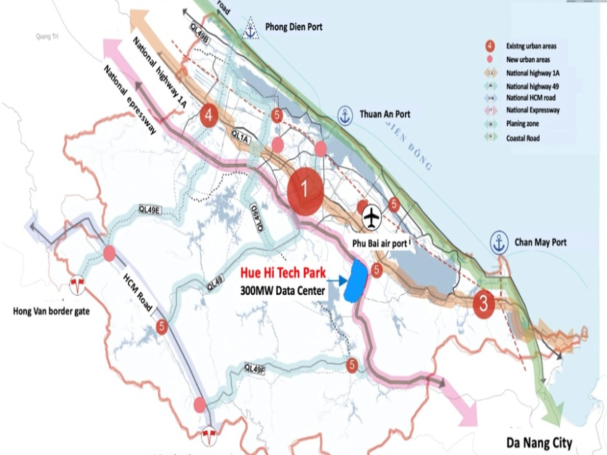

<!-- 🎯 OPTIMIZED MAP SECTION -->
<section class="location-section">
    <div class="container">
        <div class="content-grid">
            <!-- Text content -->
            <div class="location-info">
                <h2>Vị trí chiến lược</h2>
                <p>Khu Công nghệ cao Huế nằm tại vị trí đắc địa...</p>
                <ul class="location-features">
                    <li>🛫 Gần sân bay Phú Bài</li>
                    <li>🚢 Kết nối cảng Thuận An</li>
                    <li>🏭 Trung tâm 300MW Data Center</li>
                </ul>
            </div>
            
            <!-- Map container -->
            <div class="map-container">
                
            </div>
        </div>
    </div>
</section>

<!-- Alternative: Fullwidth map -->
<section class="location-section-fullwidth">
    <div class="container">
        <h2 class="text-center mb-4">Vị trí địa lý</h2>
    </div>
    
</section>
